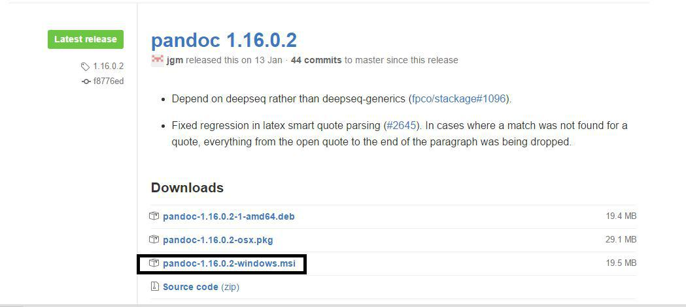

Configuración de las herramientas y tecnologías a utilizar en la asignatura Sistemas y Tecnologías Webs.
Para instalar NodeJS se ha accedido a la página oficial de nodeJS donde se ha encontrado dos versiones, una estable y la ultima version reciente.Se instaló la versión estable.
Para el desarrollo de la práctica instalaremos la última versión reciente para asegurarnos la disponibilidad de sus servicios.
Para comprobar el correcto funcionamiento de npm hemos ejecutado el comando : npm version. Tras la correcta ejecución del mismo damos por adecuada la intrepretación de comandos en el mismo.

Comprobando comando
Para instalar Express se ha introducido el comando en el cmd de windows npm install express --save, se incluyela opción --save para que se guarde de forma permanente en la lista de dependencias.
Instalando Express

Foto CampusVirtual
Para instalar Atom se ha accedido a la página oficial de Atom y se descargó e instaló.

Atom
Para instalar Github APP en windows se ha accedido a la página oficial e se instaló la version de desktop que nos permite trabajar con una interfaz

Github desktop
Como ya se tiene una cuenta creada en Cloud9 (realizado en otras asignaturas) vinculamos la existente con GitHub:

Vinculación github y Cloud9
Para instalar pandoc se ha accedido al siguiente enlace pandoc y se descargó el msi (versión ejecutable para windows) 
Para traducir de markdown a html hemos utilizado pandoc con el siguiente comando
Comando